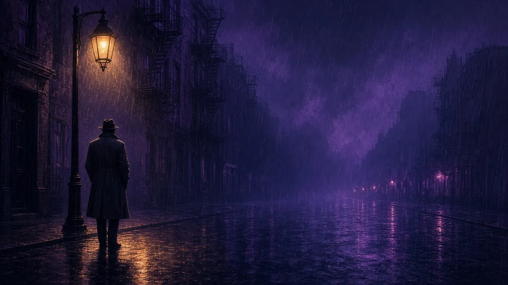
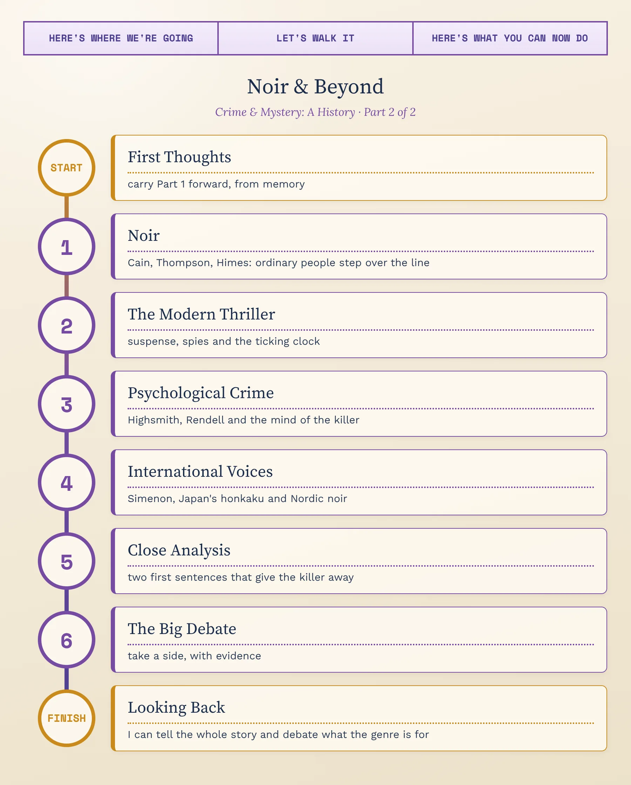
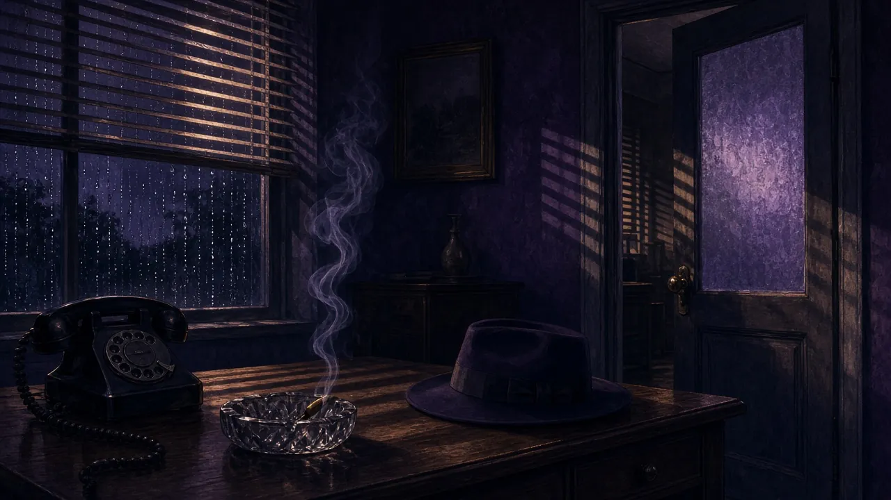
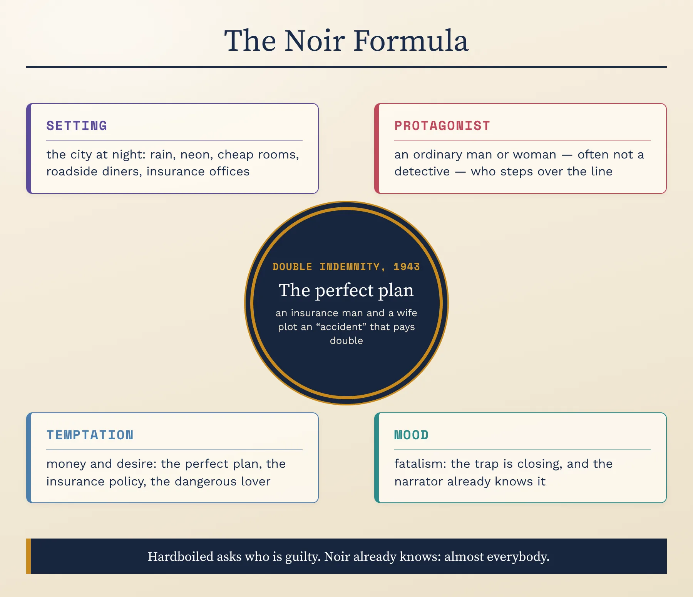
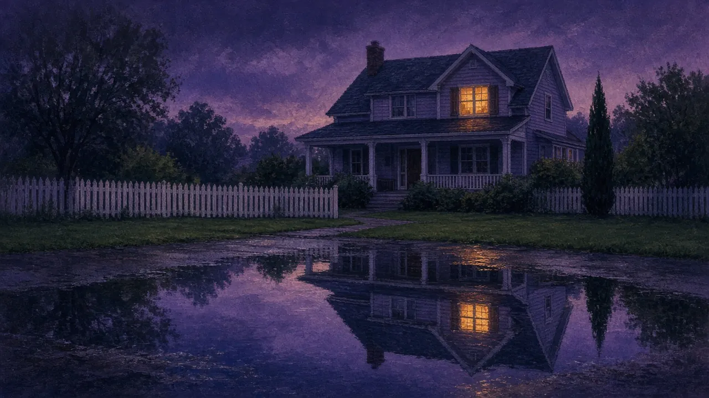
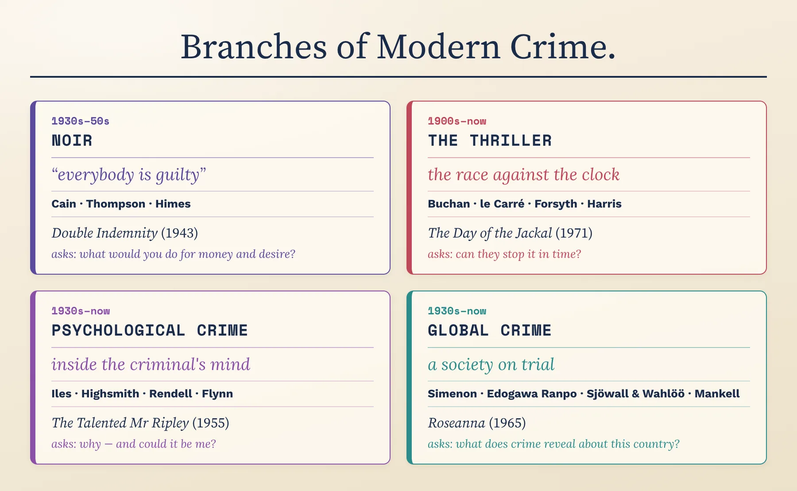
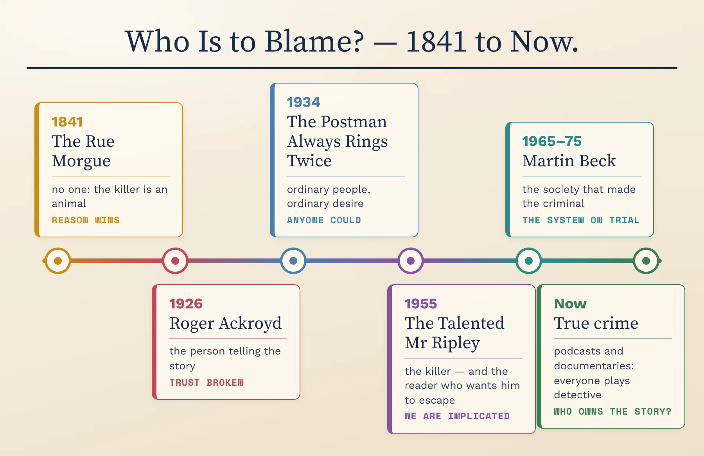
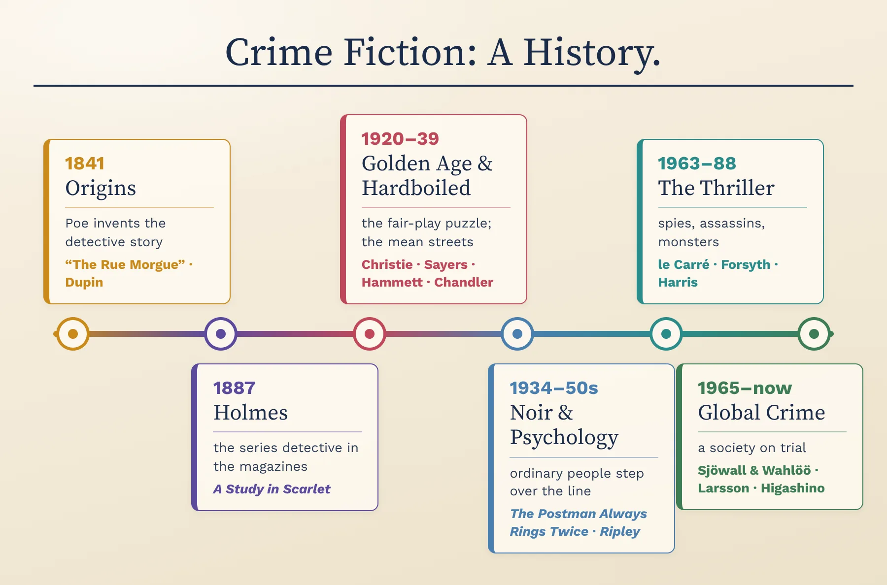
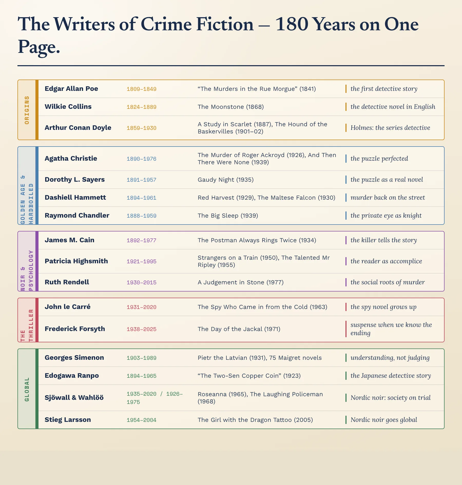
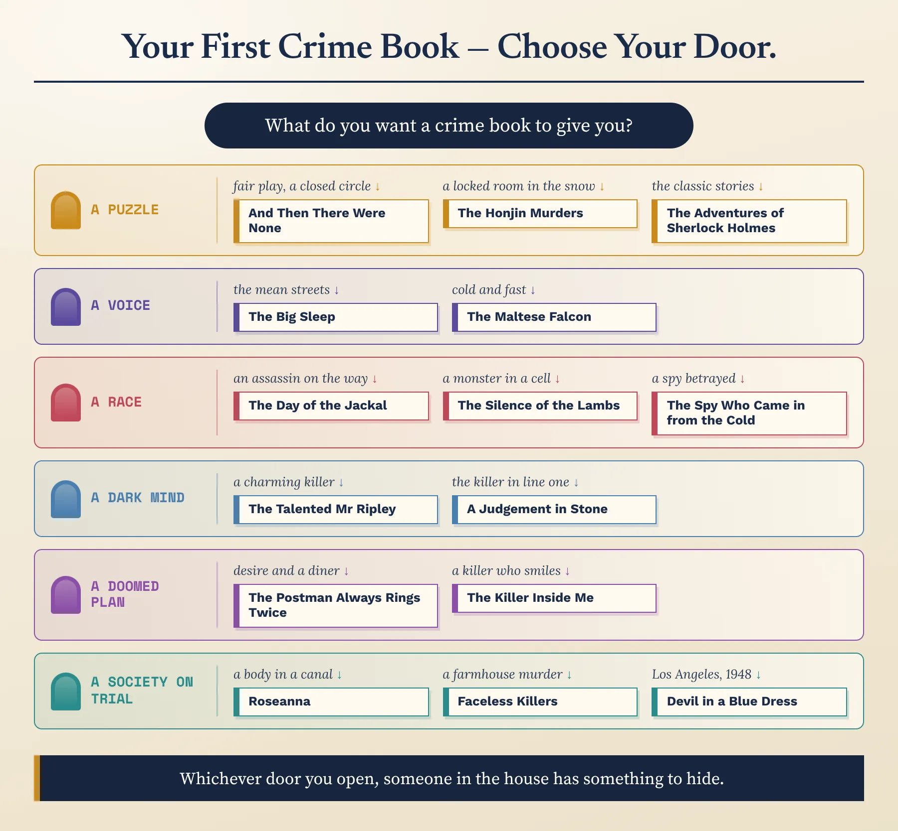

Thrillers, Minds & the World · C1/C2 · Speaking, Analysis & Discussion

By 1940, crime fiction had its two classic forms: the British puzzle and the American private eye. The next eighty years would break both open. Writers moved inside the criminal's head, turned the hunt into a race against time, and took the genre around the world — until crime fiction became one of the main ways modern societies examine themselves. This lesson follows that expansion, and then looks closely at how the best writers grip a reader from the very first sentence.
1. Retell, briefly: what happens in “The Murders in the Rue Morgue”, and why is it called the first detective story?
2. Define fair play and the red herring in your own words, with one example each.
3. The Golden Age–hardboiled contrast in one sentence — and which of the four giants' books most stuck with you? Say what happens in it.
4. What did Chandler say was wrong with the Golden Age puzzle — and what did we say was its blind spot?
The hardboiled detective walked down the mean streets without becoming mean. Noir asked a harder question: what about the people who do become mean — the ordinary men and women who step over the line?
The name: noir is French for “black”. In 1946 the French critic Nino Frank, seeing a wave of dark American crime films after the war — among them The Maltese Falcon (1941), Double Indemnity (1944) and Murder, My Sweet (1944), adapted from Chandler's Farewell, My Lovely — called them “film noir”. In 1945 the Paris publisher Gallimard had launched a crime list called the Série noire, which went on to publish many American hardboiled and noir writers in French.
The difference: in hardboiled fiction the hero is a detective, and he stays honest. In noir the central character is often not a detective at all, but an ordinary person — an insurance salesman, a drifter, a small-town deputy — drawn into crime by money, desire or weakness. The mood is fatalism: from the first page, we sense the trap closing.
The look: on screen, noir meant night, rain, wet streets, cigarette smoke and hard shadows falling through venetian blinds — a style partly borrowed from German Expressionist cinema.

“Not who did it, but how an ordinary person could do it.” From what you've just read, why might audiences after the Second World War have wanted stories in which ordinary people are capable of terrible things? And do you find a criminal narrator more interesting, or less, than a detective?
Who he was: A former newspaper journalist who wrote short, fast, brutally simple novels of ordinary people destroyed by desire.
The Postman Always Rings Twice (1934): Frank Chambers, a drifter, takes a job at a roadside diner in California and falls for Cora, the owner's young wife. Together they kill her husband and make it look like an accident — and get away with it. Then fate collects: Cora dies in a real car accident, and Frank is convicted of murdering her, the one crime he did not commit. He tells his story from a prison cell, waiting to be executed.
Double Indemnity (serialised 1936; book 1943): an insurance salesman and a bored, dangerous wife plan to kill her husband and collect on an accident policy with a “double indemnity” clause that pays twice. The perfect plan destroys them both. Billy Wilder's 1944 film, co-written with Raymond Chandler, became the model film noir.
Why he matters: he turned the crime story inside out — told by the killer, with no mystery at all, only the question of how soon the trap will close.
Who he was: An Oklahoma-born writer of cheap paperback originals, ignored by critics in his lifetime and now seen as one of noir's most disturbing voices.
The Killer Inside Me (1952): Lou Ford is a friendly, slow-talking deputy sheriff in a small Texas town who bores everyone with clichés. He is also a psychopathic killer — and he is the narrator. The horror comes from his voice: polite, folksy and completely calm as he describes what he does.
Why he matters: he took the reader all the way inside a murderer's mind, decades before the serial-killer thriller made it fashionable.
Who he was: A Black American writer who began writing in prison in the 1930s, moved to France in the 1950s, and was invited by the editor of the Série noire to write crime novels for it.
A Rage in Harlem (1957, first published in English as For Love of Imabelle): the first of his Harlem novels featuring two tough Black police detectives, Coffin Ed Johnson and Grave Digger Jones — violent, comic and furious stories of a community squeezed by racism, poverty and crime. Its French edition won France's main crime-fiction prize, the Grand Prix de Littérature Policière.
Why he matters: he showed that the mean streets looked very different depending on who walked them — a line that runs on to Walter Mosley's Devil in a Blue Dress (1990), whose detective Easy Rawlins is a Black war veteran in 1948 Los Angeles.

The formula lays out noir in four parts — setting, protagonist, temptation, mood. Use all four to pitch a noir story set in your city today: an ordinary person, the temptation that pulls them in, the place where it happens, and the mood in three words. Say it aloud — then name the moment the trap closes.
Using what you've just read — hero, morality, ending — contrast the hardboiled story with noir in two or three sentences. Say it, then compare.
The whodunit looks backwards at a crime already done. The thriller faces forwards: the bomb is ticking, the assassin is on his way, and the question is not “who?” but “will they stop it in time?”
Remember Todorov's two feelings from Part 1: the mystery runs on curiosity about the past; the thriller runs on suspense about the future. The film director Alfred Hitchcock explained the difference with a famous example in his conversations with François Truffaut: if a bomb under a table suddenly explodes, the audience gets a few seconds of surprise. If the audience is shown the bomb first, and then watches the characters chat about nothing while the clock ticks, it gets many minutes of suspense.
The lesson for writers: tell the reader more than the characters know. Suspense comes not from hiding information, but from sharing it.
The Riddle of the Sands (1903): Erskine Childers's novel sends two young Englishmen sailing among the islands off the German coast, where they uncover secret preparations for an invasion of Britain. It helped create the spy novel.
The Thirty-Nine Steps (1915): John Buchan's hero, Richard Hannay, finds a murdered stranger in his London flat, is suspected of the killing, and flees across Scotland, chased by both the police and a ring of German spies. Buchan called such books “shockers”; the innocent man on the run became one of the thriller's great patterns — and Hitchcock filmed it in 1935.
Casino Royale (1953): Ian Fleming, a former naval intelligence officer, introduced James Bond, sent to bankrupt a Soviet agent at the baccarat table. Bond became the fantasy of the spy as glamorous hero.
The Spy Who Came in from the Cold (1963): John le Carré, who had worked for both MI5 and MI6, wrote the opposite. Alec Leamas, a worn-out British agent, is sent on one last mission: to pretend to defect to East Germany. He slowly discovers that he is a pawn in a plan to protect a double agent — and that his own side is as ruthless as the enemy. The novel ends at the Berlin Wall.
Why it matters: le Carré made the spy novel a serious literature of betrayal and moral compromise.
The Day of the Jackal (1971): Frederick Forsyth's first novel follows a professional assassin hired to kill the French president, Charles de Gaulle, and the detective racing to find him. Every reader knows de Gaulle was not assassinated — yet the book is almost unbearably tense, because the suspense lies in how, not whether. Its documentary detail — forged passports, a custom-made rifle — set a style for the modern thriller.
The Silence of the Lambs (1988): in Thomas Harris's novel, Clarice Starling, a young FBI trainee, must seek help from the imprisoned psychiatrist and cannibal Hannibal Lecter to catch a serial killer before he kills again. The ticking clock and the monster in the cell made the serial-killer thriller a global form.
Bond or Leamas? One makes spying glamorous; the other makes it sad and grey. Which is closer to the truth of power, and which would you rather read? Commit to one side, use the plots as evidence, and concede one point to the other side.
Using Hitchcock's bomb, explain the difference between surprise and suspense — and say why The Day of the Jackal is tense even though we know the ending.
What if the mystery is not who did it, but why — and what it feels like to be the one who did? From the 1930s on, a line of writers moved the crime novel from the drawing room into the criminal's head.
In an inverted crime story we know the killer from the start — sometimes from the first sentence — so the usual question “who did it?” disappears. What replaces it is why, how and will they be caught?
The most famous early example is Malice Aforethought (1931) by “Francis Iles” — a pen name of Anthony Berkeley, the very man who founded the Detection Club. He believed the puzzle story had gone as far as it could, and that the future lay in the psychology of crime. The book follows a mild country doctor as he plans to murder his wife.
An unreliable narrator is a storyteller we cannot fully trust — because they are lying, deceiving themselves, or simply do not understand what they see. Psychological crime fiction loves the device, because it turns the reader into a detective of the narration itself.
You met the founding trick in Part 1, in Christie's Roger Ackroyd. Later writers made it the whole engine: Jim Thompson's smiling killer, Highsmith's charming Ripley, and the two narrators of Gone Girl, who tell completely different stories of the same marriage.

If you already know who the killer is, why keep reading? Think of a film or series where you knew the criminal from the start. What kept you watching — and did you, uncomfortably, start to hope they would get away with it?
Who she was: An American writer who spent much of her life in Europe, and who was more interested in the criminal than in the crime — above all in guilt, obsession and the thin line between ordinary and monstrous.
Strangers on a Train (1950): two men meet on a train. One, a charming psychopath named Bruno, proposes that they “swap” murders — each will kill the person the other wants dead, so neither has a motive. The other man treats it as a joke. Then Bruno does his half. Hitchcock filmed it in 1951.
The Talented Mr Ripley (1955): Tom Ripley, a young con man in New York, is paid to go to Italy and persuade a rich man's son, Dickie Greenleaf, to come home. Instead Tom envies, admires and finally murders Dickie — and takes over his identity and his money. He escapes justice, and Highsmith brought him back in four more novels. The reader, disturbingly, wants him to get away with it.
Why she matters: she made the reader an accomplice.
Who she was: An English writer who wrote traditional police novels about Inspector Wexford (from 1964) and, alongside them, darker psychological novels — some under the pen name Barbara Vine.
A Judgement in Stone (1977): a wealthy, cultured family hires a housekeeper, Eunice Parchman, who is hiding a secret that shames her: she cannot read or write. The novel tells us in its first sentence that she will kill them all — and then shows, step by step, how loneliness, shame and misunderstanding lead to it.
Why she matters: she turned the crime novel into a study of social as well as psychological causes — class, isolation, the people nobody notices.
Gone Girl (2012): on their fifth wedding anniversary, Amy Dunne disappears and her husband Nick becomes the chief suspect. Chapters alternate between Nick's present-day narration and Amy's diary — until, halfway through, the novel reveals that one of these voices has been lying to us in a way that turns the whole story upside down.
The movement: the novelist Julia Crouch coined the term “domestic noir” in 2013 for crime fiction set in homes and relationships, often centred on women's experience — the danger is not on the mean streets but across the breakfast table.
Write the first sentence of a crime novel that tells us who commits the crime and hints at why — but leaves us desperate to know more. Then read it aloud and explain what question it leaves in the reader's mind.
For much of its history, crime fiction spoke with a British or American accent. But from Paris to Tokyo to Stockholm, writers took the form and used it to ask what was wrong with their societies. Today some of the genre's most famous voices write in French, Japanese, Swedish, Norwegian and Italian.
Every society has crime, police and secrets — so the crime novel is a ready-made tool for looking at any culture from the inside. A murder investigation gives a writer a reason to go everywhere: into rich homes and poor ones, police stations and government offices, families and gangs.
That is why critics often call crime fiction a kind of social novel. The detective is a guide through a whole society — and what the investigation uncovers is often not only a killer, but a country's hidden problems.
Who he was: A Belgian writer from Liège, one of the most prolific novelists of the twentieth century.
Maigret: beginning with Pietr the Latvian (1931), Simenon wrote 75 novels and 28 short stories about Commissaire Jules Maigret of the Paris police. Maigret is the opposite of Holmes: he does not deduce from clues so much as soak up an atmosphere — a bar, a boarding house, a canal — until he understands the people involved. His aim is to understand, not to judge.
Why he matters: he made the detective story a study of ordinary human weakness, written in plain, atmospheric prose.
Edogawa Ranpo (1894–1965) chose a pen name that, said in Japanese, sounds like “Edgar Allan Poe”. His first story, “The Two-Sen Copper Coin” (1923), a cipher puzzle, is often seen as the start of the modern Japanese detective story, and his detective Akechi Kogorō first appeared in 1925.
Honkaku (“orthodox” or “authentic”) is the Japanese name for the fair-play puzzle mystery. Seishi Yokomizo's The Honjin Murders (1946) is a locked-room murder on a snowy wedding night in a traditional house; in the 1950s, Seichō Matsumoto's Points and Lines (1958) led a “social school” that used crime to expose corruption; and from 1987, with Yukito Ayatsuji's The Decagon House Murders, a “new honkaku” movement brought back the pure puzzle.
Today: Keigo Higashino's The Devotion of Suspect X (2005), in which a brilliant mathematics teacher helps his neighbour cover up a killing, became an international best-seller.
Maj Sjöwall and Per Wahlöö, a Swedish couple, wrote ten novels about the Stockholm detective Martin Beck between 1965 (Roseanna) and 1975 (The Terrorists), under the overall title The Story of a Crime. They planned the series as a critique of Swedish society: behind the welfare state's clean surface, the books show loneliness, inequality and a police force that serves power. The Laughing Policeman won the American Edgar Award for best novel in 1971.
Henning Mankell (1948–2015) began his Kurt Wallander series with Faceless Killers (1991): the brutal murder of an elderly farming couple in southern Sweden sets off a wave of anti-immigrant violence, and a tired, lonely detective struggles to hold both his case and his life together.
Stieg Larsson (1954–2004), a journalist who investigated the far right, died before his Millennium trilogy appeared. The Girl with the Dragon Tattoo (2005) — in Swedish, Men Who Hate Women — pairs a journalist with the brilliant, damaged hacker Lisbeth Salander, and made Nordic noir a worldwide phenomenon.
Jorge Luis Borges's story “Death and the Compass” (1942) turns the detective story into a philosophical trap: a brilliant detective follows a pattern of clues that was designed to lead him to his own death.
Umberto Eco's The Name of the Rose (1980) is a murder mystery set in a medieval Italian monastery, solved by a monk named William of Baskerville — a nod to Holmes.
Andrea Camilleri began his comic, food-loving Sicilian detective Inspector Montalbano with The Shape of Water (1994); Jo Nesbø began his Oslo detective Harry Hole with The Bat (1997).
What can a crime novel from another country tell you that a news report cannot? Choose one of the writers on this tab and argue, in two minutes, what their investigation reveals about their society — and whether a crime story is a fair way to judge a country.

You've now met every branch on this map — noir, the thriller, psychological crime and the global turn. Cover it, and name each branch with one writer who drove it and the question it asks that the Golden Age never asked. Then uncover and check. Which two branches overlap the most — and is the overlap a strength or a muddle?
The richest analysis often starts with the smallest unit. Two psychological crime novels, written almost fifty years apart, do something the Golden Age would have called unthinkable: they give away the killer in the very first sentence.
Answer aloud first. Then compare.
Every crime story answers it, openly or not. Follow the answer through five stops you now know:
Walk the line yourself, from memory: 1841 → 1926 → 1934 → 1955 → 1965. At each stop, name the work and its answer in one sentence — and then say where today's crime stories sit on the line. Think of true-crime podcasts and documentaries: who do they blame?

One arguable sentence comparing how two stops answer the question of blame — a claim someone could dispute, not a mere difference. Use a frame, say it aloud, defend it.
You now hold the whole story — from Poe's locked room to Larsson's Stockholm, from Christie's puzzles to Highsmith's charming killer. Pick two debates. Position, evidence from the writers you've met, and one honest concession to the other side.
1. Highsmith makes us want Ripley to escape; Thompson makes us live inside a killer's head. Is it dangerous for fiction to make murderers sympathetic — or is understanding evil exactly what literature is for?
2. Sjöwall and Wahlöö used crime novels to criticise their society; Simenon wanted only to understand people. Should crime fiction take political positions — or does that turn a story into a lecture? Use two writers as evidence.
3. Today, many people get their crime stories from true-crime podcasts and documentaries about real victims. Is true crime simply crime fiction with real people — and is that a problem?
4. The puzzle never died: honkaku in Japan, “cosy” mysteries everywhere. In a world full of real violence, why do readers still want a closed circle of suspects and a solution that makes sense? Comfort, art — or both?
Choose one debate and lift it beyond books: state, in one sentence, the real-world issue underneath it (for example: who gets to decide what justice looks like? or should stories about real crimes belong to the victims?). Then speak for two to three minutes on how the crime fiction you've studied illuminates that issue — name at least two works.
No notes for this — it pulls both lessons together.
1. Noir in two sentences: how is it different from hardboiled fiction? Use Cain or Thompson as your example.
2. Explain the difference between surprise and suspense, and name one thriller and what happens in it.
3. What happens in The Talented Mr Ripley — and what is an inverted crime story?
4. Name one crime writer from Japan and one from Sweden, with a book each and what it reveals about its society.
5. Walk the “who is to blame?” line: five stops, five answers.
Now measure yourself against the two big maps — one for the whole timeline, one for the writers. Where you were wrong, say it again, right this time.

Find three works on the line you could not have placed before these two lessons. For one of them, say what came just before it and how it was a reply — the rule it broke, the question it changed, or the voice it added.

Pick three writers from three different decades. Put them in order and say, for each, the one thing they added that the writer before them had not — a new setting, a new technique, or a whole new point of view.
Define crime fiction in a single sentence that covers everything from “The Murders in the Rue Morgue” to Gone Girl. Say it aloud — then stress-test it: does it wrongly include every novel with a death in it? Does it wrongly exclude anything we studied? Refine it until it survives.

Follow the flowchart to the book it picks for you. Do you agree with where it sent you? Make the case for a different first book instead — in the language of the toolkit: its puzzle, its suspense, its view of who is to blame.
Across both lessons: which movement or writer most changed how you see the genre — and which one book will you actually go and read? (Say why, in the language of the toolkit: fair play, suspense, the unreliable narrator, the society on trial.)